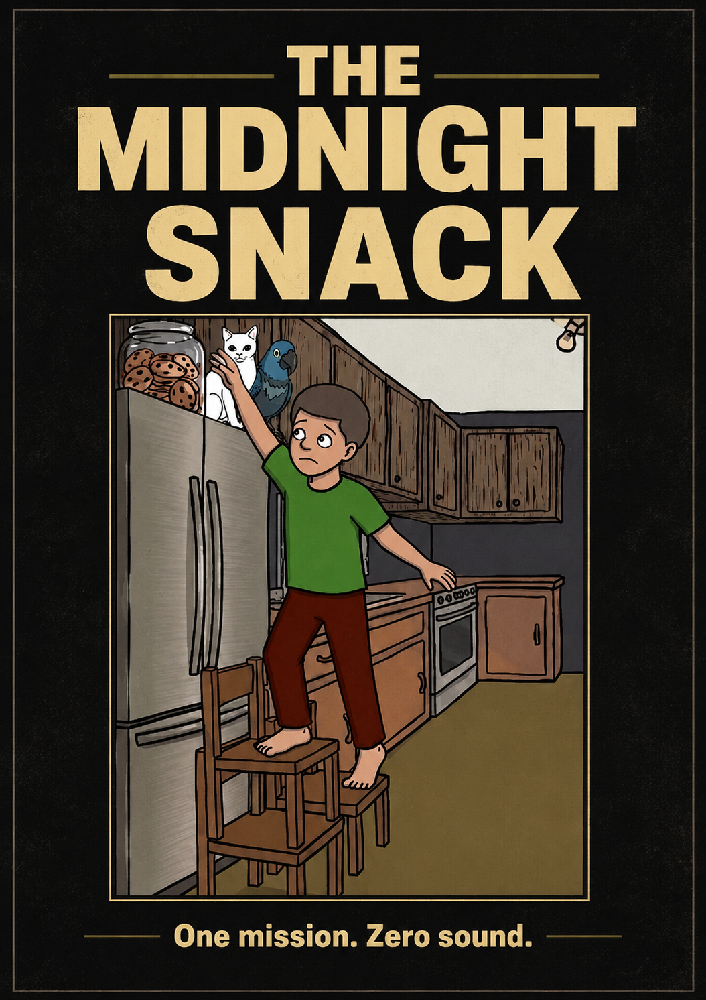

— One mission. Zero sound. —

The house is silent. The clock strikes 2:00 AM. For most, it’s a time for deep sleep, but for one hungry boy, it’s the start of the most dangerous mission of his life. follows a young boy on a high stakes, stealth driven quest through a dark, obstacle house to reach a jar full of cookies.
Between the boy and his prize lies a minefield of household security systems. He must navigate creaky floorboards that threaten to alert the house, a heavy sleeping family dog, a watchful cat hiding in the shadows, and a parrot capable of blowing his cover at any moment. It’s a 5 minute animation exploring the tension between silence and a craving.
The technical architecture and structural pipeline behind the film.
Role: The Stealth Specialist
Tactical Status: Operating barefoot for maximum noise suppression to bypass Jack the dog. Relies on local objects wooden chairs to clear vertical obstacles and bypass perimeter security.
Engineered entirely inside FL Studio. The project flips traditional scoring conventions by treating absolute silence as the primary tracking instrument, layered against hyper-isolated, high-gain foley elements to maximize psychological suspense.
Final-year Creative Multimedia student at Limkokwing University. Creator of the "Fisher Stamp" protocol, focusing on clean technical execution, strict framework pipelines, and precise narrative pacing.
Contact: Available via academic portal and official portfolio channels.